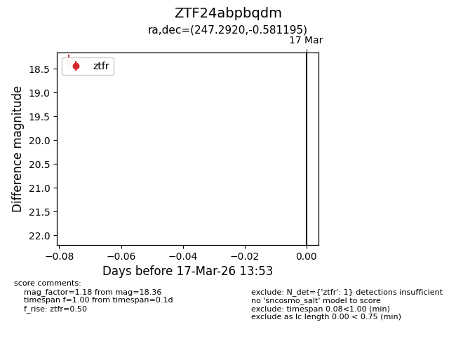
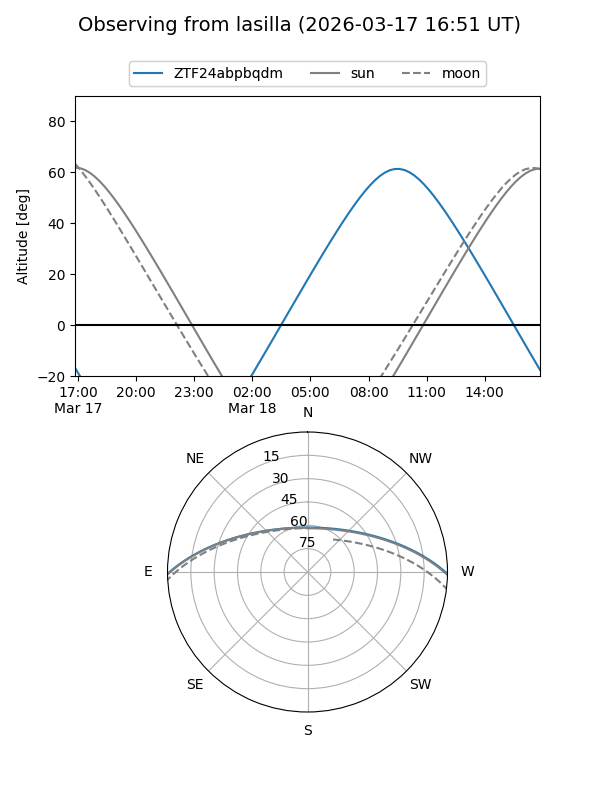
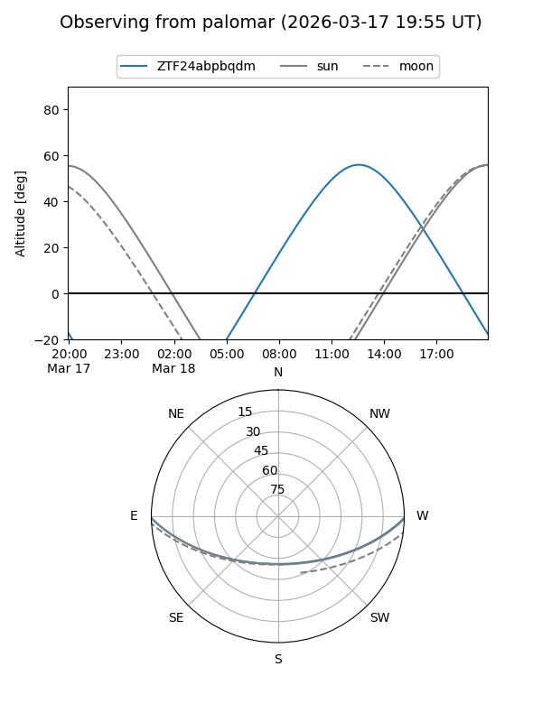

ZTF24abpbqdm
Target ZTF24abpbqdm at 2026-03-17 13:55
Aliases and brokers:
FINK: link
Lasair: link
ALeRCE: link
alt names
ZTF24abpbqdm (ztf,fink_ztf)
Coordinates:
equatorial (ra, dec) = 247.2920,-0.58120
equatorial (HMS+DMS) = 16:29:10.07,-00:34:52.30
galactic (l, b) = (14.2999,+30.86520)
Flags:
Photometry:
last ztfr=18.36
1 ztfr detections
Lightcurve

Visibility


Additional plots